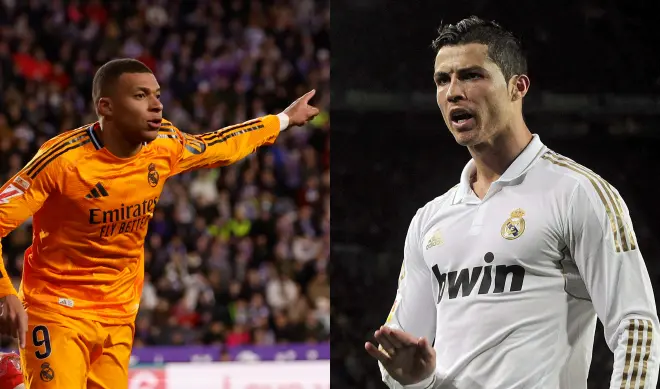

Kylian Mbappé va sin freno. El delantero del Real Madrid ha entrado en 2025 en plan Terminator. Ocho goles en ocho partidos han disparado sus cifras hasta los 22 goles en todas las competiciones. En todas y cada una de ellas ha marcado Mbappé, tanto a lo largo de la temporada como en las cuatro que ha jugado desde que cambió el año: Copa, Supercopa, Liga y Champions.
Sátira. Al más puro estilo de las Fallas de Valencia. Vinicus va a ser uno de los grandes protagonistas de la Exposición del Ninot que busca la mejor figura fallera para salvarse de las llamas el próximo 19 de marzo en Valencia. El artista Víctor Navarro, que planta la Falla de Denia- Brasil ha presentado un ninot de Vinicius en el que se mofa de su balón de oro frustrado y lo convierte en el 'cagalló d`or' lo que se viene a traducir como (moñiga de oro).
El Valencia se encontró con su triste realidad en estadio Olímpico Lluís Companys de Montjuïc. Tras lograr un empate y una victoria para empezar su escalada en busca de la salvación, el Barcelona lo puso en su sitio. El Barcelona, con su victoria 7-1 El , igualó la peor goleada que haya recibido el Valencia nunca en la Liga.